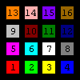

| Primitive |
Alt |
Action |
SetScreenColor [rr gg
bb]
SetPenColor [rr gg bb] |
SetSC
SetPC |
Set (background) color of screen to [rr gg bb].
Set color of turtle pen to [rr gg
bb]. |
PenPaint
PenReverse
PenErase |
PPT
PX
PE |
Set pen to normal paint mode and lower pen.
Set pen to reverse color mode and lower pen.
Set pen to screen color and lower pen. |
| FindColor [xx yy] |
FC |
Return color of pixel at point xx yy, [rr gg bb].
* |
Underlined Set can be removed from a primitive name in order to return information.
eg. SetHeading sets the heading of the turtle. Heading returns the heading of the turtle.
* turtle position and heading remain unchanged.
Colors are set by a list of the three primary colors of light; red, green and blue. Each
color varies in intensity from 0 (min) to 255 (max).
Pen Colors
As well as an [rr gg bb] list, pen and stage color can be set by (but
not return) a name or single number.
So, SetPC 2 = SetPC Green = SetPC
[0 255 0].
See RGB Cols and Swatches (Light&Dark) and Swatches (RGB).

Black 0 |
Red 1
Green 2
Yellow 3
Blue 4 |
Magenta 5
Cyan 6
White 7
Gray 8 |
LightGray 9
DarkRed 10
DarkGreen11
DarkBlue 12 |
Orange 13
Pink 14
Purple 15
Brown 16 |
By rearranging the values 0, 128 and 255 we can create four more colors
besides Orange and Purple. Aqua and Leaf are the most different (useful). Lime is similar to Green and Rose is similar to Magenta. Aqua, Leaf, Lime and Rose are library procedures.
Note
- Aqua, Leaf, Lime and Rose are four extra colors used in many programs.
Along with Orange and Purple they comprise the 6 arrangements of values
0, 128 and 255. See Alternative Colors for more color rgb values.
- SetSC will wash the drawing
area and reset the turtle to the home position.
- PX works by subtracting the current pen color from
the screen color to generate a 'difference' color. This is then added
to colors the pen draws over. So if it draws over the same color as
the pen color the result will be the screen color.